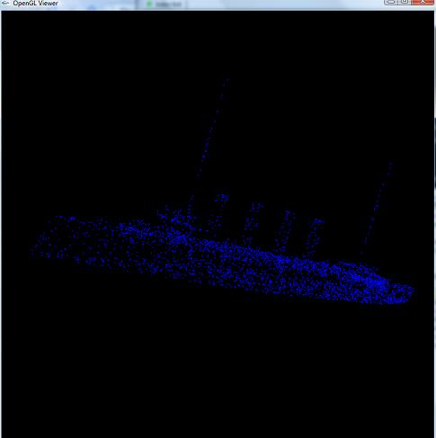
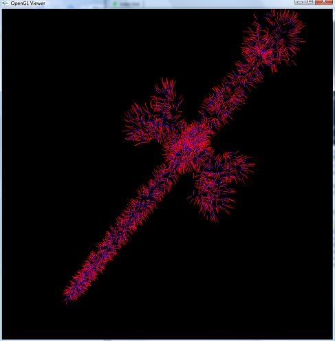
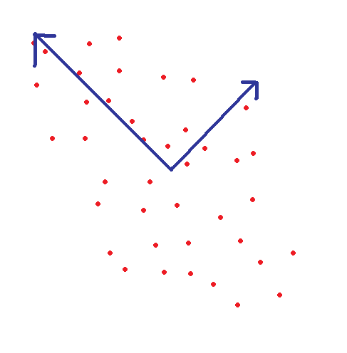
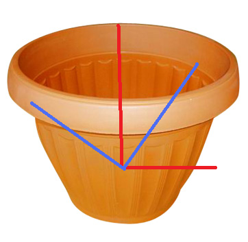
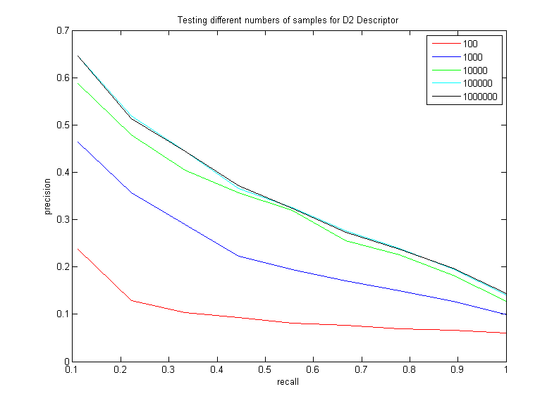
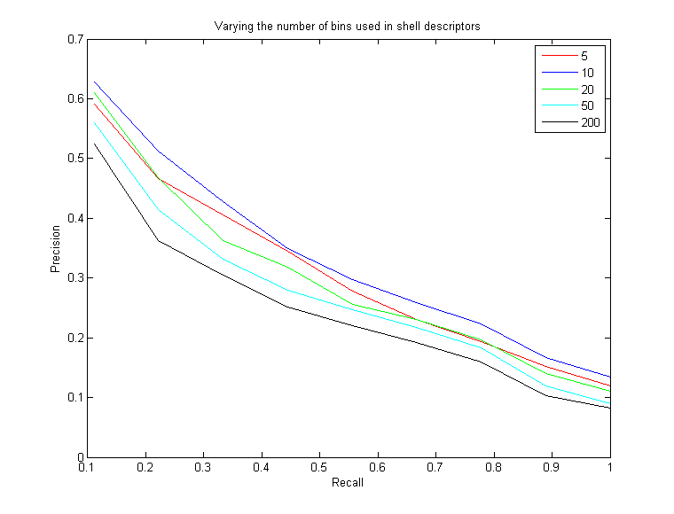
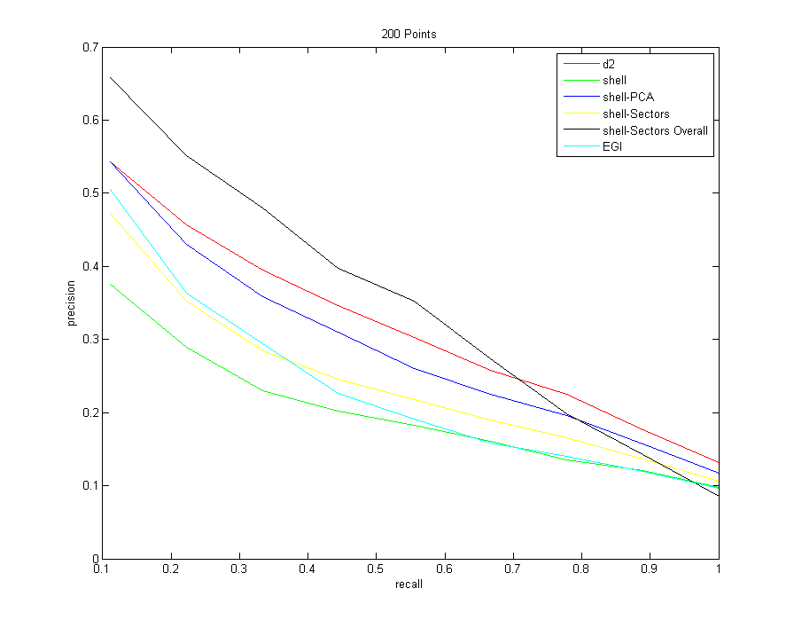
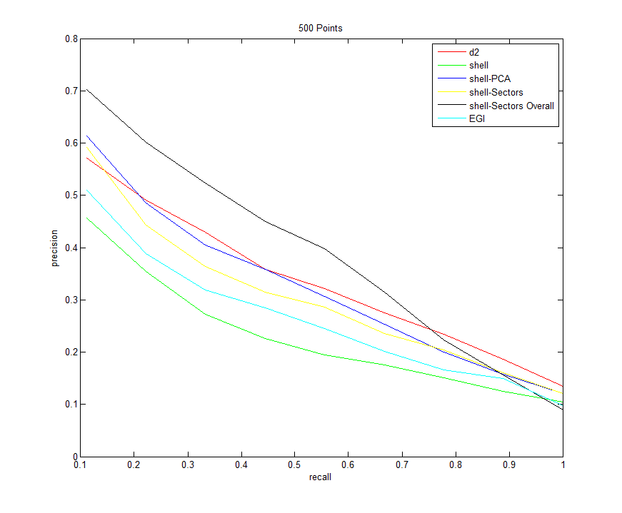
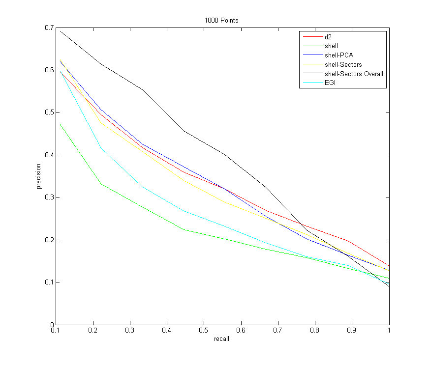
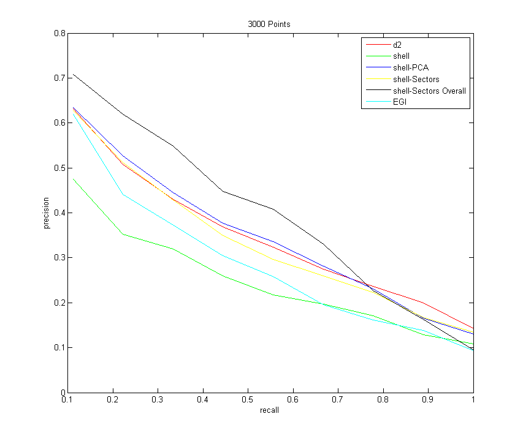

3D Shape Matching Techniques with Shape Descriptors
NOTE: Those who find this interesting should check out Assignment 2 of my Digital 3D Geometry class- Purpose
- Development Environment and Libraries
- Sampling points and the "PointCloud" Object
- The D2 Shape Descriptor
- The Shell Histogram Descriptor
- The PCA Shell Descriptor
- Shells and Sectors
- The Extended Gaussian Image Descriptor
- Running My Program
- Results
- D2 Descriptor (varying pair samples)
- Shell Descriptors (varying the number of shells)
- All Descriptors (sampling 200 points from each model)
- All Descriptors (sampling 500 points from each model)
- All Descriptors (sampling 1000 points from each model)
- All Descriptors (sampling 3000 points from each model)
- Analysis / Conclusions
- Code Summary
Purpose
This assignment explores 3D shape matching, with possible applications to a 3D shape search engine. That is, given a particular search shape and a database of known shapes, what are the shapes in the database that are the most similar to the shape in question? This assignment explores different "3D shape descriptors," which are objective functions calculated over all of the shapes, as similarity metrics for the shapes in attempt to classify them. In other words, a descriptor is some array of numbers for each shape that is able to hold some features of the shape, but that is a highly compressed (and consequently not usually invertible) description that makes batch comparisons quick.
The database that is used as a benchmark for the different descriptors can be found here. It consists of 200 different shapes (20 different types of shapes, 10 of each type). To test the descriptors for success, each shape is taken out in turn and compared to the remaining shapes, and the program tests to see if the most similar shapes are of the same type (more detail about this in the "results" section).
Development Environment and Libraries
I wrote the majority of the code for this project in C++, with the help of a few outside libraries to make matrix and vector operations easier.
The main library I used was the "R3" library, from COS 426: Computer Graphics, last semester. The library can be found here. I used R3Point.h to store the point locations in the point cloud, and R3Vector.h to store the normals. I also used the R3Matrix.h class briefly for the egi descriptor, to do a transformation on all of the point and normal sets.
I also used the TNT library to do singular value decomposition.
Sampling points and the "PointCloud" Object
The models in the database are supplied as triangle meshes. But to calculate most of the descriptors, it is more convenient to go back a step and work from a 3D point cloud with normals at each point. A program, pointsample.exe, is able to convert from the triangle mesh format to a point cloud. I call this program from within my C++ program using the system command.
As each model is sampled, I read in the set of points and normals for each model into a PointCloud object (a class that I invented). In the constructor for this object, I compute the center of mass of all of the points, and subtract it from every point. This is to help normalize for translation, to prevent the objective functions from being different for two very similar shapes that are simply translational offsets of each other.
Also in the constructor, I normalize for scale by scaling each point down by the root mean square distance of all of the points from the origin. This makes the new root mean square distance of all of the points from the origin 1.
NOTE: I also made my own program with OpenGL to view the pointclouds and the normals, because I didn't like the one in Matlab. I simply modified the Mesh Viewer from the same Assignment 2 in 426 last semester that I got the R3 library from. I made it so that the mouse rotates the mesh around its center of mass. Left click to rotate the object, right click to translate the object, and center click to zoom in/zoom out. Type "v" to toggle displaying the points, and type "n" to toggle displaying the normals. Here are a couple of screenshots:
|  |  |
| Looking at the point samples of a ship | Looking at the point samples of a sword, along with their surface normals (drawn in red) |
The D2 Shape Descriptor
The simplest shape descriptor is the "D2 shape descriptor." This consists of taking pairs of random points, computing their distances, and placing those distances into a histogram. The histogram can them be looked at as a probability distribution for how far apart points are from each other on the object. Note that because I normalized for scale by scaling down by the RMS distance of points, this distance could be unbounded in the case of outliers (i.e. having tons of points really close to the center and 1 point really far away). This case is rare, and after experimentation it seems that most points are within a distance 3 of the origin after the first step. So I simply chose to put everything further away from 3 in the 3 bin. I then have 100 bins total spaced from a distance of 0 to a distance of 3, and I can take as many random samples as I want to construct the histogram in this interval.
NOTE: In order for the comparisons to make sense between shapes, the same number of random samples should be taken in each shape. If we wanted a different number of samples for some reason, but we still wanted to be as correct as possible, we should scale each bin down by the number of samples (thus, turning the histogram into an actual probability density function which sums to 1). I didn't do this in my program since I'm always comparing objects with the same number of random samples.
The Shell Histogram Descriptor
The shell histogram is similar to the D2 shape descriptor, except it is deterministic. The bins now represent the distance of each point to the center of mass of the object. I chose to use 10 bins for the shells, with the radii of the shells spaced evenly from 0 to 3.0 (please refer to this analysis for why I settled on 10 bins, as opposed to the 200 that I was originally using).
NOTE: Similarly to the D2 descriptor, comparing shell descriptors only makes sense if the number of sampled point cloud is the same between objects. Otherwise, they should be scaled down by the number of samples to turn them into a PDF. Once again, I don't do this since I always sample each object with the same number of points.
The PCA Shell Descriptor
This is similar to the shell descriptor, but one level of complexity is added. Intuitively, for similar shapes, all of the points falling into a shell that's a particular distnace from the origin should have a similar distribution across that shell. But even if the shapes are similar, they could be rotational offsets of each other around the center of mass. This will change the exact distribution of points in shells, but it won't change the number of points in each shell or their locations relative to each other. Thus, this descriptor takes advantage of this fact tries to find the principal directions of the points in a particular shell, and it stores the strength of those directions (instead of their actual directions).
This is done by putting all of the points in a shell as row vectors in an nx3 matrix (where n is the number of points in that shell), and taking the singular value decomposition of that matrix. The singular value matrix stores an orthonormal basis for input vectors that remains orthonormal after being applied to the matrix (singular values are similar to eigenvalues, except the basis can rotate or flip when applied to the matrix, in addition to being scaled). The "singular values" are the square of the amount by which each vector in the input orthonormal basis is scaled as it is put through the matrix. The singular values are listed in decreasing order of magnitude.
Now let's imagine taking a point P and putting it into a 3x1 column vector, and then multiplying it on the left by the nx3 matrix of all points in a shell. Each multiplication of a row by P can be looked at as taking the dot product of P and the point in that row. Intuitively, then, the largest dot product should appear when P is the closest to a principal direction (i.e. a bunch of points are pointing along one axis). This principal axis would correspond to the orthonormal direction with the largest singular value (since it scales the input the most when P has a larger dot product with the rest of the points).
Thus, the singular value decomposition will give back a set of 3 orthonormal vectors, where each vector points in a direction of strong variation, with the direction of strongest variation listed first (since the singular values are listed in decreasing order of magnitude).
|  |
| An example of using SVD to find the principal, orthognoal components on a 2D point set (this process is also known "Principal Components Analysis," or PCA for short) |
NOTE: As previously mentioned, I compute the SVD using the TNT library.
NOTE ALSO: Just as with the simpler shells descriptor, I am using 10 shells spaced evenly from 0 to 3.0
Shells and Sectors
Another idea to try to store more information about the shells of points around the origin is to try to partition them into sectors in each shell. First, come up with a set of equally spaced points about the unit sphere (this is the point set I used to define the sectors spaced equally around the sphere). For all of the points within the shell, find the closest point in that set, and place the point there. This way, there is a 2D descriptor, where the first dimension is the radial distance from the center of mass, and the second dimension is the "sector," or some point on the surface of a sphere that points can cluster to.
There is a slight problem if two models are similar but aligned to different rotational axes, however, since this will shift all of the sectors (and the descriptors will be totally different). To try to make this rotationally invariant, a bit of spatial information is sacraficed. There are two options:
- The sectors within each shell are sorted by the number of points they have. Then theoretically, two of the exact same model that are rotated will have the exact same descriptor.
- A count can be made over all of the points of which points fall into which sector, and then the sectors in each shell can placed in increasing order of how many points they hold overall (as opposed to focussing on how many points an individual shell holds)
NOTE: Just as with the previous two shell descriptors, I use 10 shells spaced evenly from 0 to 3.0 from the origin. It's just that this time, each shell has 32 sectors in it that represent where the points cluster, and so it ends up being a 2-Dimensional descriptor
NOTE ALSO: This descriptor takes the longest to compare, since it is two dimensional. There are 10 bins * (32 sectors / bin) = 320 values total to compare.
The Extended Gaussian Image Descriptor
A natural question to ask after the shells and sectors descriptor is, is it possible to somehow rotate the shapes so that they will have the same orientation before trying to calculate a descriptor (so that awkward steps like sorting bins can be avoided)? One solution is to calculate the 3 principal components of all of the points in the point cloud to estimate the principal axes of the shape, and then to go into the coordinate frame of those axes (effectively rotating the shape so that those axes align with the unit axes x, y, and z). This is the approach that the Extended Gaussian Image descriptor takes. First, it rotates the 3D shape as such, and then it creates a histogram of normals by choosing which normal is closest to which uniformly-sampled point on the sphere. Note that, unlike the shells and sectors case, there is no longer any information stored about the location of the points. But also note that in a convex shape, no two normals point in the same direction. So this descriptor definition catpures some important information (and it may even be invertible in certain cases...assuming there isn't too much information thrown away when the normals are quantized to bins).
Now let's formalize the first step of calculating the principal directions, by noticing the following facts:
- When the SVD is computed, the V matrix contains an orthonormal basis for the principal axes of the points.
- If we multiply a point (as a column vector) on the left by V, the orthonormal basis matrix, it is like going from "V coordinates" to "world coordinates." Therefore, to go back to "V coordinates" (where everything is a linear combination of principal components), multiply all of the points on the left by the inverse of V.
- Since the inverse of V is the same as the transpose of V, multiply all of the points on the left by the transpose of V
- After all of this is done, the points will expressed as a linear combination of principal axes. This means that shapes that have the same geometry but are rotational offsets of each other should have the same coordinates of their points and normals after this is done
NOTE: There is a problem with this approach for something that has principal components that are very near in magnitude, however (this will show up in the results). The SVD method loses stability in this case, since the singular values are so close to each other (and a different coordinate frame could work just as well to describe the directions of variation). Here is a picture of this below:
|  |
| See how two orthonormal principal direction bases can plausibly describe the same object here |
Also, even if the directions are the same, two of the directions could have singular values very close to each other (take a long, circular rod, for example; the two principal components across the circle will be the same length). This means that those directions could be flipped
Running my program
If you go into the "Debug" directory produced by Visual Studio and type "Descriptors3D" (the main executable for calculating the descriptors), my program prints the following:
Descriptors3D
Usage: Descriptors3D
Note how the first three parameters are mandatory, and the rest are optional. Here's what this all means:
- "models path" is a path to the directory containing the models in .ply format
- "types.txt" is a text file that says what the base name of each model type is (e.g. "biplane, scooter, coffeecup").
- "num models per type" says how many models of each type to load in. This is always 10 with the database that I'm using
- "-v" is verbose (I never actually use this)
- "-resample" instructs the program to resample every model with "npoints" number of points and normals. If a shape hasn't been sampled yet, it gets sampled automatically even if this isn't specified. This is just if the user wants to change the number of points used in the test. Also, it's nice not to have the program resample the shapes from scratch each time, because if I'm debugging my descriptors, I know I'm working from the exact same data sets every time when I omit this option
- "-d2" instructs the program to perform the d2 descriptor with "nsamples" random point pairs and to save a precision-recall graph for this descriptor as "D2PR.txt"
NOTE that I use 100 distances spaced evenly from a distance of 0 to 3 - "-shell" instructs the program to calculate the shell descriptor of all of the shapes, and to save a precision-recall graph for this descriptor as "ShellPR.txt"
NOTE that I use 10 shells spaced evenly from 0 to 3 - "-shellPCA" instructs the program to calculate the shell-PCA descriptor, and to save a precision-recall graph as "ShellPCAPR.txt"
- "-shellSectors" instructs the program to calculate the shellSectors descriptor, sorting the sectors within each shell, and to save a precision-recall graph as "ShellSectorsPR.txt"
- "-shellSectorsOverall" instructs the program to calculate the shellSectors descriptor, sorting the sectors based on their counts over all of the shells, and to save a precision-recall graph as "ShellSectorsOverallPR.txt"
- "-egi" instructs the program to calculate the EGI descriptor, and to save a precision-recall graph as "EGIPR.txt"
Results
To test the descriptors for success, some retrieval task should be performed. A common way to analyze classifications against a database it to create a "precision recall graph." What happens is, we start with a model, and we want to find what type it is by comparing it to models we have in a database already. So we compute the euclidean distance between the descriptor of this model and the descriptors of all of the models in the database, and we sort sort the models in ascending order of their Euclidean distance, so that the model with the closest Euclidean distance is deemed the "most similar" to this model using this descriptor (NOTE: There are probably better ways to compare probability distributions, but Euclidean Distance is a good place to start for the purposes of this assignment).
Now go through all of the models in the database from closest to furthest Euclidean distance with the descriptor. Go through a certain number of models in that list. The "recall" is defined as the percentage of the models of the correct type that have appeared in the list up to that point. For example, let's say that we gave the database a cat. If there are 20 cats total in the database, and 5 cats have been seen in the list so far, then the recall is (5/20) = 25%. The precision is defined as the ratio of the number of correct models that have been recalled, to the total number of models that have been recalled up to a point. So if in the first 10 items, the five cats appeared (but the other 5 out of the first 10 most similar were not cats), the precision would be (5/10) = 50%. The recall is plotted on the horizontal axis, while the precision is plotted on the vertical axis.
NOTE: In my program for each descriptor, I go through and take out each model individually, and then query the database as described above with the models that remain. There are 10 models of each type, so I'm looking to recall a total of 9 objects for each model that I take out. I then compute the precision recall graph like this for every item in the database, and average them together for the overall precision recall graph for each descriptor.
D2 Descriptor (varying pair samples)
The purspose of this test is to vary the number of random pairs of points the D2 descriptor takes in its histogram, in order to squeeze the best performance out of the descriptor. Here are the results of varying the number of random point pairs taken in the D2 descriptor (working from sets of 3000 sampled points from each shape):
Note how increasing the number of samples does increase the performance of this descriptor, as expected. However, this is a clear example of diminishing returns; there is hardly a difference between taking 100,000 samples and taking 1,000,000 (and taking 1,000,000 samples per point starts to really slow the performance down). Thus, it seems that the best choice is somewhere between 10,000 and 100,000. I will be using 100,000 for the rest of my tests.
Shell Descriptors (varying the number of shells)
The purpose of this test is to determine the optimal number of shells that should be used with the shell descriptors (i.e. shell, shellPCA, shellSectors). Using fewer shells seems like it would be less descriptive, since more points would get quantized to fewer shells. But there is a tradeoff. If there are too many shells, then there is instability with where the points get placed. If a point is just a little bit offset between two models and there are many shells spaced very closely together, then it could get placed in two different shells, where it would add much more to the Euclidean distance between the two objects. This could really degrade performance. Not only does it take much more time to do the Euclidan distance compare, but it really degrades the effectiveness of the shells if there are too many (I decided to run this test because I was originally using 200 shells, which seemed like way too many)Here are the results of varying the number of equally-spaced shells spaced from 0 to 3.0, and then computing the shells-sectors descriptor:

As you can see, jumping from 5 shells to 10 shells helps and is more descriptive. However, jumping from 10 to 20 begins to have a negative effect, and increasing the number of shells even more continues to decrease the effectiveness of the descriptors. In the end, I settled on 10 shells spaced evenly from 0 to 3 for all three of my shell descriptors
All Descriptors (sampling 200 points from each model)
Command:Descriptors3D models models/types.txt 10 -resample 200 -d2 100000 -shell -shellPCA -shellSectors -shellSectorsOverall -egi
All Descriptors (sampling 500 points from each model)
Command:Descriptors3D models models/types.txt 10 -resample 500 -d2 100000 -shell -shellPCA -shellSectors -shellSectorsOverall -egi
All Descriptors (sampling 1000 points from each model)
Command:Descriptors3D models models/types.txt 10 -resample 1000 -d2 100000 -shell -shellPCA -shellSectors -shellSectorsOverall -egi
All Descriptors (sampling 3000 points from each model)
Command:Descriptors3D models models/types.txt 10 -resample 3000 -d2 100000 -shell -shellPCA -shellSectors -shellSectorsOverall -egi
Analysis / Conclusions
Now that I have the precision-recall graphs for a variety of scenarios, let me try to summarize and explain a few trends:- Note that all descriptors improve with an increased number of samples from each shape. They don't all improve uniformly, however. The one that improves the most drastically is the shell-PCA descriptor
- First let me just focus on the shell descriptors. Just counting the number of points that fall in each shell does the worst of all of the descriptors (shown in green). Creating sectors within the shells is an improvement if sorting occurs within each bin, which makes sense since now more information about the distribution of points on the shells is retained.
Then, oddly enough, when using sectors and sorting them over all bins, this does better than all of the other descriptors for the majority of the time, but has the worst overall asymptotic performance. After a precision of about 0.7, it starts to tank - Note also that the shell-PCA descriptor consistently better than the shells-sectors descriptor, and it becomes increasingly competitive with D2 as more samples are taken. I initially expected that the sectors descriptor would do better, since it stores more information with the amount of bins that points can quantize to. But perhaps a more compact summary of the distribution of points in a shell (namely, just the 3 singular values of the distribution), does a better job, since there are fewer bins (and less sources of error). Also note that using the singular values is rotation-invariant by definition, so no fancy sorting tricks have to be done (which throws away some information). Regardless, shellSectors and shellPCA appear to converge to the same values as the recall goes to 1, so the shellPCA really only has an edge towards the beginning
- EGI does better relative to the other descriptors for small point sets since it is a smaller descriptor (only 32 bins for the 32 sampled normal directions). But overall, it's the second worst (right after the shells method). My guess for this is because of the instability of the rotation normalization step. Normalizing for rotation probably works really well for the first few models recalled, but the later models that take a while probably had the wrong axes chosen (either they were misaligned, or two principal directions were flipped, as discussed above in the egi section).
Also, if I had to guess, I would say that the descriptor would probably do a better job if the normal directions were quantized to a histogram more finely. - EGI ties for last with the shell descriptor towards the end. But they go about things very differently (the former uses points positions and the latter only uses normals). So clearly there are virtues to using both point and normal information, since we can get by using either or the other
- Amazingly, the D2 descriptor is the best overall asymptotic performance if enough samples are taken. I say amazingly because this is by far the simplest descriptor to understand and to implement. But it kind of makes sense when you think about it. Since the point pairs are taken randomly, it is extremely robust to strange geometries, and if enough points are taken the histogram should be able to encompass all of these strange features and topologies
- If I had to give people advice on what descriptors to use, here's what I would say
- I would say that D2 is a great place to start, since it is consistently in the top half of the descriptors over all recall values (and is usually first or second best), and it has the best asymptotic curve as the recall goes to one.
- If the user wants to rely strongly on the first few models recalled, then doing shell-Sectors sorting over all bins is the way to go (but it has bad performance towards the end)
- Another solid alternative to these two descriptors is the shell-PCA descriptor. It's competitive with D2, and it actually begins to outperform it for a long stretch if enough samples are taken in each shape
Code Summary
| Filename | Description |
| PointCloud.cpp, PointCloud.h | This is the main class that I created to store point cloud objects from sampled triangle meshes. I store parallel STL Vectors of points and normals. I have member functions that can compute all of the different descriptors for each object |
| main.cpp | This is the main program that constructs tons of PointCloud objects and compares their descriptors to output precision recall graphs |
| ViewCloud.cpp | My own version of a program that allows the user to view and interact with a 3D point cloud (adapted from COS 426 last semester) |
| PlotEverything.m | A matlab scrip that automatically plots the six descriptors against each other and labels them |
| Assignment3.vcproj | The Visual C++ Project file that has all of the proper paths and links everything together |
blog comments powered by Disqus